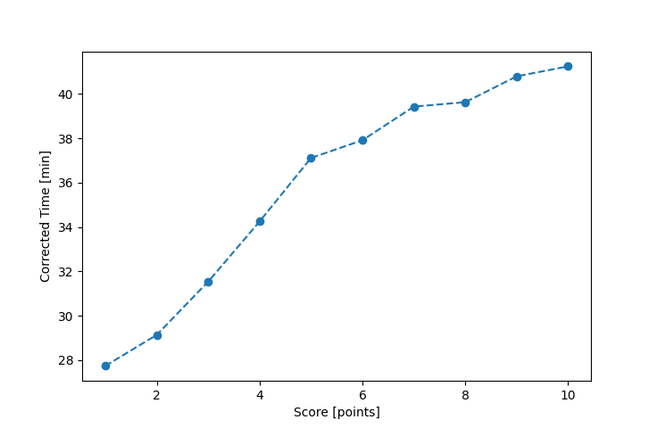

| Wind: | 2-3 (BFT) |
|---|---|
| RC: | Matt_L, Adam_E |
| Date: | August 17, 2025 |
| Notes: | M3 |
| Rank / Score | Name | Boat | Input Time [mm:ss] | Input Offset [mm:ss] | Race Time [mm:ss] | Race Time [s] | Handicap | Corrected Time [s] | Corrected Time [mm:ss] |
|---|---|---|---|---|---|---|---|---|---|
| 1.0 | Ian_O | US-1 | 25:19 | 00:00 | 25:19 | 1519 | 0.91300 | 1664 | 27:44 |
| 2.0 | Rod_H | LASEM | 28:21 | 00:00 | 28:21 | 1701 | 0.97300 | 1748 | 29:08 |
| 3.0 | Chris_E | SF | 31:40 | 00:00 | 31:40 | 1900 | 1.00400 | 1892 | 31:32 |
| 4.0 | Ryan_C | SF | 34:23 | 00:00 | 34:23 | 2063 | 1.00400 | 2055 | 34:15 |
| 5.0 | Larry_G | SF | 37:16 | 00:00 | 37:16 | 2236 | 1.00400 | 2227 | 37:07 |
| 6.0 | Craig_J | STFS | 40:02 | 00:00 | 40:02 | 2402 | 1.05600 | 2275 | 37:55 |
| 7.0 | Heather_B | SF | 39:35 | 00:00 | 39:35 | 2375 | 1.00400 | 2366 | 39:26 |
| 8.0 | Lewis_V | SF | 39:48 | 00:00 | 39:48 | 2388 | 1.00400 | 2378 | 39:38 |
| 9.0 | Chris_P | SF | 40:58 | 00:00 | 40:58 | 2458 | 1.00400 | 2448 | 40:48 |
| 10.0 | Jay_H | LASE | 38:04 | 00:00 | 38:04 | 2284 | 0.92300 | 2475 | 41:15 |

Application Notes:
All race results are unofficial
View source code at https://github.com/cessnao3/portsmouthracecalc/